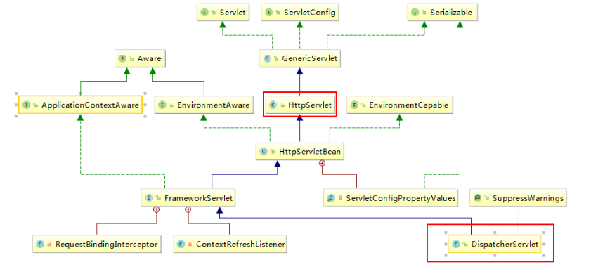

SpringMvc
SSM：mybatis+Spring+SpringMVC
1、什么是MVC
- MVC是模型(Model)、视图(View)、控制器(Controller)的简写，是一种软件设计规范。
- 是将业务逻辑、数据、显示分离的方法来进行组织代码。
- MVC主要作用是降低了视图与业务逻辑间的双向偶合。
- MVC不是一种设计模式，MVC是一种架构模式。当然不同的MVC存在差异。
Model（模型）：数据模型，提供要展示的数据，因此包含数据和行为，可以认为是领域模型或JavaBean组件（包含数据和行为），不过现在一般都分离开来：Value Object（数据Dao） 和 服务层（行为Service）。也就是模型提供了模型数据查询和模型数据的状态更新等功能，包括数据和业务。
View（视图）：负责进行模型的展示，一般就是我们见到的用户界面，客户想看到的东西。
Controller（控制器）：接收用户请求，委托给模型进行处理（状态改变），处理完毕后把返回的模型数据返回给视图，由视图负责展示。 也就是说控制器做了个调度员的工作。
最典型的MVC就是JSP + servlet + javabean的模式。

职责分析：
Controller：控制器
- 取得表单数据
- 调用业务逻辑
- 转向指定的页面
Model：模型
- 业务逻辑
- 保存数据的状态
View：视图
- 显示页面
MVC框架要做哪些事情
- 将url映射到java类或java类的方法 .
- 封装用户提交的数据 .
- 处理请求—调用相关的业务处理—封装响应数据 .
- 将响应的数据进行渲染 . jsp / html 等表示层数据 .
说明：
常见的服务器端MVC框架有：Struts、Spring MVC、ASP.NET MVC、Zend Framework、JSF；
常见前端MVC框架：vue、angularjs、react、backbone；
由MVC演化出了另外一些模式如：MVP、MVVM 等等….
2、概述
Spring MVC是Spring Framework的一部分，是基于Java实现MVC的轻量级Web框架。
查看官方文档：
https://docs.spring.io/spring/docs/5.2.0.RELEASE/spring-framework-reference/web.html#spring-web
我们为什么要学习SpringMVC呢?
Spring MVC的特点：
- 轻量级，简单易学
- 高效 , 基于请求响应的MVC框架
- 与Spring兼容性好，无缝结合
- 约定优于配置
- 功能强大：Restful、数据验证、格式化、本地化、主题等
- 简洁灵活
Spring的web框架围绕DispatcherServlet [ 调度Servlet ] 设计。
DispatcherServlet的作用是将请求分发到不同的处理器。从Spring 2.5开始，使用Java 5或者以上版本的用户可以采用基于注解形式进行开发，十分简洁；
正因为SpringMVC好 , 简单 , 便捷 , 易学 , 天生和Spring无缝集成(使用SpringIoC和Aop) , 使用约定优于配置 . 能够进行简单的junit测试 . 支持Restful风格 .异常处理 , 本地化 , 国际化 , 数据验证 , 类型转换 , 拦截器 等等……所以我们要学习 .
最重要的一点，用的人多 ，技术问题解决快，使用的公司多 .
中心控制器
Spring的web框架围绕DispatcherServlet设计。 DispatcherServlet的作用是将请求分发到不同的处理器。从Spring 2.5开始，使用Java 5或者以上版本的用户可以采用基于注解的controller声明方式。
Spring MVC框架像许多其他MVC框架一样, 以请求为驱动 , 围绕一个中心Servlet分派请求及提供其他功能，DispatcherServlet是一个实际的Servlet (它继承自HttpServlet 基类)。

SpringMVC的原理如下图所示：
当发起请求时被前置的控制器拦截到请求，根据请求参数生成代理请求，找到请求对应的实际控制器，控制器处理请求，创建数据模型，访问数据库，将模型响应给中心控制器，控制器使用模型与视图渲染视图结果，将结果返回给中心控制器，再将结果返回给请求者。

SpringMVC执行原理

图为SpringMVC的一个较完整的流程图，实线表示SpringMVC框架提供的技术，不需要开发者实现，虚线表示需要开发者实现。
简要分析执行流程
- DispatcherServlet表示前置控制器，是整个SpringMVC的控制中心。用户发出请求，DispatcherServlet接收请求并拦截请求。
我们假设请求的url为 : http://localhost:8080/SpringMVC/hello
如上url拆分成三部分：
http://localhost:8080服务器域名
SpringMVC部署在服务器上的web站点
hello表示控制器
通过分析，如上url表示为：请求位于服务器localhost:8080上的SpringMVC站点的hello控制器。
- ==HandlerMapping为处理器映射。DispatcherServlet调用HandlerMapping,HandlerMapping根据请求urlHandler。==
- ==HandlerExecution表示具体的Handler,其主要作用是根据url查找控制器，如上url被查找控制器为：hello。==
- ==HandlerExecution将解析后的信息传递给DispatcherServlet,如解析控制器映射等。==
- ==HandlerAdapter表示处理器适配器，其按照特定的规则去执行Handler。==
- ==Handler让具体的Controller执行。==
- ==Controller将具体的执行信息返回给HandlerAdapter,如ModelAndView。==
- ==HandlerAdapter将视图逻辑名或模型传递给DispatcherServlet。==
- ==DispatcherServlet调用视图解析器(ViewResolver)来解析HandlerAdapter传递的逻辑视图名。==
- ==视图解析器将解析的逻辑视图名传给DispatcherServlet。==
- ==DispatcherServlet根据视图解析器解析的视图结果，调用具体的视图。==
- ==最终视图呈现给用户。==
在这里先听一遍原理，不理解没有关系，我们马上来写一个对应的代码实现大家就明白了，如果不明白，那就写10遍，没有笨人，只有懒人！
3、SpringMVC项目
3.1、创建项目
采用注释的方式，能省略大量的xml配置。
新建一个Moudle，添加web支持！
建立包结构 com.controller
由于Maven可能存在资源过滤的问题，我们将配置完善
1
2
3
4
5
6
7
8
9
10
11
12
13
14
15
16
17
18
19
20
| <build>
<resources>
<resource>
<directory>src/main/java</directory>
<includes>
<include>**/*.properties</include>
<include>**/*.xml</include>
</includes>
<filtering>false</filtering>
</resource>
<resource>
<directory>src/main/resources</directory>
<includes>
<include>**/*.properties</include>
<include>**/*.xml</include>
</includes>
<filtering>false</filtering>
</resource>
</resources>
</build>
|
在pom.xml文件引入相关的依赖：主要有Spring框架核心库、Spring MVC、servlet , JSTL等。我们在父依赖中已经引入了！
配置web.xml
注意点：
- 注意web.xml版本问题，要最新版！
- 注册DispatcherServlet
- 关联SpringMVC的配置文件
- 启动级别为1
- 映射路径为 / 【不要用/*，会出现404】
1
2
3
4
5
6
7
8
9
10
11
12
13
14
15
16
17
18
19
20
21
22
23
| <?xml version="1.0" encoding="UTF-8"?>
<web-app xmlns="http://xmlns.jcp.org/xml/ns/javaee"
xmlns:xsi="http://www.w3.org/2001/XMLSchema-instance"
xsi:schemaLocation="http://xmlns.jcp.org/xml/ns/javaee http://xmlns.jcp.org/xml/ns/javaee/web-app_4_0.xsd"
version="4.0">
<servlet>
<servlet-name>SpringMVC</servlet-name>
<servlet-class>org.springframework.web.servlet.DispatcherServlet</servlet-class>
<init-param>
<param-name>contextConfigLocation</param-name>
<param-value>classpath:springmvc-servlet.xml</param-value>
</init-param>
<load-on-startup>1</load-on-startup>
</servlet>
<servlet-mapping>
<servlet-name>SpringMVC</servlet-name>
<url-pattern>/</url-pattern>
</servlet-mapping>
</web-app>
|
/ 和 /* 的区别：
< url-pattern > / </ url-pattern >不会匹配到.jsp， 只针对我们编写的请求；
即：.jsp 不会进入spring的 DispatcherServlet类 。
< url-pattern > / </ url-pattern > 会匹配 .jsp，
会出现返回 jsp视图时再次进入spring的DispatcherServlet 类，导致找不到对应的controller所以报404错。
添加Spring MVC配置文件
- 让IOC的注解生效
- 静态资源过滤 ：HTML . JS . CSS . 图片 ， 视频 …..
- MVC的注解驱动
- 配置视图解析器
在resource目录下添加springmvc-servlet.xml配置文件，配置的形式与Spring容器配置基本类似，为了支持基于注解的IOC，设置了自动扫描包的功能，具体配置信息如下：
1
2
3
4
5
6
7
8
9
10
11
12
13
14
15
16
17
18
19
20
21
22
23
24
25
26
27
28
29
30
31
32
33
34
35
| ?xml version="1.0" encoding="UTF-8"?>
<beans xmlns="http://www.springframework.org/schema/beans"
xmlns:xsi="http://www.w3.org/2001/XMLSchema-instance"
xmlns:context="http://www.springframework.org/schema/context"
xmlns:mvc="http://www.springframework.org/schema/mvc"
xsi:schemaLocation="http://www.springframework.org/schema/beans
http://www.springframework.org/schema/beans/spring-beans.xsd
http://www.springframework.org/schema/context
https://www.springframework.org/schema/context/spring-context.xsd
http://www.springframework.org/schema/mvc
https://www.springframework.org/schema/mvc/spring-mvc.xsd">
<context:component-scan base-package="com.kuang.controller"/>
<mvc:default-servlet-handler />
<mvc:annotation-driven />
<bean class="org.springframework.web.servlet.view.InternalResourceViewResolver"
id="internalResourceViewResolver">
<property name="prefix" value="/WEB-INF/jsp/" />
<property name="suffix" value=".jsp" />
</bean>
</beans>
|
在视图解析器中我们把所有的视图都存放在/WEB-INF/目录下，这样可以保证视图安全，因为这个目录下的文件，客户端不能直接访问。
创建Controller
编写一个Java控制类： com.kuang.controller.HelloController , 注意编码规范
1
2
3
4
5
6
7
8
9
10
11
12
13
14
15
16
| package com.kuang.controller;
import org.springframework.stereotype.Controller;
import org.springframework.ui.Model;
import org.springframework.web.bind.annotation.RequestMapping;
@Controller
@RequestMapping("/HelloController")
public class HelloController {
@RequestMapping("/hello")
public String sayHello(Model model){
model.addAttribute("msg","hello,SpringMVC");
return "hello";
}
}
|
- @Controller是为了让Spring IOC容器初始化时自动扫描到；
- @RequestMapping是为了映射请求路径，这里因为类与方法上都有映射所以访问时应该是/HelloController/hello；
- 方法中声明Model类型的参数是为了把Action中的数据带到视图中；
- 方法返回的结果是视图的名称hello，加上配置文件中的前后缀变成WEB-INF/jsp/hello.jsp。
创建视图层
在WEB-INF/ jsp目录中创建hello.jsp ， 视图可以直接取出并展示从Controller带回的信息；
可以通过EL表示取出Model中存放的值，或者对象；
1
2
3
4
5
6
7
8
9
| <%@ page contentType="text/html;charset=UTF-8" language="java" %>
<html>
<head>
<title>SpringMVC</title>
</head>
<body>
${msg}
</body>
</html>
|
配置Tomcat运行
配置Tomcat ， 开启服务器 ， 访问 对应的请求路径！
OK，运行成功！
3.2、小结
实现步骤其实非常的简单：
- 新建一个web项目
- 导入相关jar包
- 编写web.xml , 注册DispatcherServlet
- 编写springmvc配置文件
- 接下来就是去创建对应的控制类 , controller
- 最后完善前端视图和controller之间的对应
- 测试运行调试.
使用springMVC必须配置的三大件：
处理器映射器、处理器适配器、视图解析器
通常，我们只需要手动配置视图解析器，而处理器映射器和处理器适配器只需要开启注解驱动即可，而省去了大段的xml配置
4、Controller
4.1、控制器Controller
- 控制器复杂提供访问应用程序的行为，通常通过接口定义或注解定义两种方法实现。
- 控制器负责解析用户的请求并将其转换为一个模型。
- 在Spring MVC中一个控制器类可以包含多个方法
- 在Spring MVC中，对于Controller的配置方式有很多种
@Controller注解类型用于声明Spring类的实例是一个控制器（在讲IOC时还提到了另外3个注解）；
Spring可以使用扫描机制来找到应用程序中所有基于注解的控制器类，为了保证Spring能找到你的控制器，需要在配置文件中声明组件扫描。
1
2
|
<context:component-scan base-package="com.kuang.controller"/>
|
增加一个DemoController类，使用注解实现；
1
2
3
4
5
6
7
8
9
10
11
| @Controller
public class DemoController{
@RequestMapping("/demo")
public String index(Model model){
model.addAttribute("msg", "DemoController");
return "demo";
}
}
|
运行tomcat测试
可以发现，我们的两个请求都可以指向一个视图，但是页面结果的结果是不一样的，从这里可以看出视图是被复用的，而控制器与视图之间是弱偶合关系。
原生写法：是要实现org.springframework.web.servlet.mvc.Controller类
1
2
3
4
5
6
7
8
9
| public class DemoController implements Controller {
public ModelAndView handleRequest(HttpServletRequest httpServletRequest, HttpServletResponse httpServletResponse) throws Exception {
ModelAndView mv = new ModelAndView();
mv.addObject("msg","DemoController");
mv.setViewName("test");
return mv;
}
}
|
编写完毕后，去Spring配置文件中注册请求的bean；name对应请求路径，class对应处理请求的类
1
| <bean name="/demo" class="com.controller.DemoController"/>
|
4.2、RequestMapping
- @RequestMapping注解用于映射url到控制器类或一个特定的处理程序方法。可用于类或方法上。用于类上，表示类中的所有响应请求的方法都是以该地址作为父路径。
- 只添加注解在方法上面
1
2
3
4
5
6
7
8
| @Controller
@RequestMapping("/demo")
public class DemoController {
@RequestMapping("/1")
public String demo1(){
return "test";
}
}
|
这时候访问在就是：http://localhost:8080 / demo/1，相当于添加多一级路径。
4.3、RestFul 风格
概念
Restful就是一个资源定位及资源操作的风格。不是标准也不是协议，只是一种风格。基于这个风格设计的软件可以更简洁，更有层次，更易于实现缓存等机制。
功能
资源：互联网所有的事物都可以被抽象为资源
资源操作：使用POST、DELETE、PUT、GET，使用不同方法对资源进行操作。
分别对应 添加、 删除、修改、查询。
传统方式操作资源 ：通过不同的参数来实现不同的效果！方法单一，post 和 get
使用RESTful操作资源 ： 可以通过不同的请求方式来实现不同的效果！请求地址一样，但是功能可以不同！
使用method属性指定请求类型
用于约束请求的类型，可以收窄请求范围。指定请求谓词的类型如GET, POST, HEAD, OPTIONS, PUT, PATCH, DELETE, TRACE等。
如果不指定，任何请求类型都可以访问到。
1
2
3
4
5
6
7
8
9
| @Controller
@RequestMapping("/demo")
public class DemoController {
@RequestMapping("/1", method = {RequestMethod.POST})
public String demo1(){
return "test";
}
}
|
@PathVariable 可以设置restFul风格
所有的地址栏请求默认都会是 HTTP GET 类型的。
RESTful方式常用注解：
1
2
3
4
| @GetMapping
@PostMapping
@PutMapping
@DeleteMapping
|
@GetMapping 是一个组合注解
它所扮演的是 @RequestMapping(method =RequestMethod.GET) 的一个快捷方式。
平时使用的会比较多！
4.4、小黄鸭调试法
场景一：我们都有过向别人（甚至可能向完全不会编程的人）提问及解释编程问题的经历，但是很多时候就在我们解释的过程中自己却想到了问题的解决方案，然后对方却一脸茫然。
场景二：你的同行跑来问你一个问题，但是当他自己把问题说完，或说到一半的时候就想出答案走了，留下一脸茫然的你。
其实上面两种场景现象就是所谓的小黄鸭调试法（Rubber Duck Debuging），又称橡皮鸭调试法，它是我们软件工程中最常使用调试方法之一。

此概念据说来自《程序员修炼之道》书中的一个故事，传说程序大师随身携带一只小黄鸭，在调试代码的时候会在桌上放上这只小黄鸭，然后详细地向鸭子解释每行代码，然后很快就将问题定位修复了。
5、转发和重定向
通过SpringMVC来实现转发和重定向 - 无需视图解析器；
1
2
3
4
5
6
7
8
9
10
11
12
13
14
15
16
17
18
| @Controller
public class ResultSpringMVC {
@RequestMapping("/demo1")
public String demo1(){
return "/index.jsp";
}
@RequestMapping("/demo2")
public String demo2(){
return "forward:/index.jsp";
}
@RequestMapping("/demo3")
public String demo3(){
return "redirect:/index.jsp";
}
}
|
6、数据处理
6.1、接收数据
url接收
请求Url : http://localhost:8080/hello?name=xxx
处理方法 :
1
2
3
4
5
| @RequestMapping("/hello")
public String hello(String name){
System.out.println(name);
return "hello";
}
|
后台输出 : xxx
后台接收参数名和url的参数不一样处理：
1
2
3
4
5
| @RequestMapping("/hello")
public String hello(@RequestParam("name") String username){
System.out.println(name);
return "hello";
}
|
参数也可以放对象
1
2
3
4
5
6
7
8
9
10
11
12
13
14
15
|
@RequestMapping("/user")
public String user(User user){
System.out.println(user);
return "hello";
}
class User {
private int id;
private String name;
private int age;
}
|
说明：如果使用对象的话，前端传递的参数名和对象名必须一致，否则就是null。
6.2、返回数据
使用Model。
1
2
3
4
5
6
7
8
| @RequestMapping("/hello")
public String hello(@RequestParam("username") String name, Model model){
model.addAttribute("msg",name);
System.out.println(name);
return "test";
}
|
使用ModelMap
1
2
3
| public String hello(@RequestParam("username") String name, ModelMap model){
.....
}
|
使用原生对象ModelAndView
1
2
3
4
5
6
7
8
9
| public class ControllerTest1 implements Controller {
public ModelAndView handleRequest(HttpServletRequest httpServletRequest, HttpServletResponse httpServletResponse) throws Exception {
ModelAndView mv = new ModelAndView();
mv.addObject("msg","ControllerTest1");
mv.setViewName("test");
return mv;
}
}
|
请使用80%的时间打好扎实的基础，剩下18%的时间研究框架，2%的时间去学点英文，框架的官方文档永远是最好的教程。
6.3、乱码问题
6.3.1、通过过滤器解决
在SpringMVC中配置过滤器，web.xml中配置。
1
2
3
4
5
6
7
8
9
10
11
12
| <filter>
<filter-name>encoding</filter-name>
<filter-class>org.springframework.web.filter.CharacterEncodingFilter</filter-class>
<init-param>
<param-name>encoding</param-name>
<param-value>utf-8</param-value>
</init-param>
</filter>
<filter-mapping>
<filter-name>encoding</filter-name>
<url-pattern>/*</url-pattern>
</filter-mapping>
|
缺点：对get的支持不好。
6.3.2、解决乱码比较好的办法
1、修改tomcat配置文件 ： 设置编码！
1
2
3
| <Connector URIEncoding="utf-8" port="8080" protocol="HTTP/1.1"
connectionTimeout="20000"
redirectPort="8443" />
|
2、自定义过滤器
1
2
3
4
5
6
7
8
9
10
11
12
13
14
15
16
17
18
19
20
21
22
23
24
25
26
27
28
29
30
31
32
33
34
35
36
37
38
39
40
41
42
43
44
45
46
47
48
49
50
51
52
53
54
55
56
57
58
59
60
61
62
63
64
65
66
67
68
69
70
71
72
73
74
75
76
77
78
79
80
81
82
83
84
85
86
87
88
89
90
91
92
93
94
95
96
97
| package com.kuang.filter;
import javax.servlet.*;
import javax.servlet.http.HttpServletRequest;
import javax.servlet.http.HttpServletRequestWrapper;
import javax.servlet.http.HttpServletResponse;
import java.io.IOException;
import java.io.UnsupportedEncodingException;
import java.util.Map;
public class GenericEncodingFilter implements Filter {
@Override
public void destroy() {
}
@Override
public void doFilter(ServletRequest request, ServletResponse response, FilterChain chain) throws IOException, ServletException {
HttpServletResponse myResponse=(HttpServletResponse) response;
myResponse.setContentType("text/html;charset=UTF-8");
HttpServletRequest httpServletRequest = (HttpServletRequest) request;
HttpServletRequest myrequest = new MyRequest(httpServletRequest);
chain.doFilter(myrequest, response);
}
@Override
public void init(FilterConfig filterConfig) throws ServletException {
}
}
class MyRequest extends HttpServletRequestWrapper {
private HttpServletRequest request;
private boolean hasEncode;
public MyRequest(HttpServletRequest request) {
super(request);
this.request = request;
}
@Override
public Map getParameterMap() {
String method = request.getMethod();
if (method.equalsIgnoreCase("post")) {
try {
request.setCharacterEncoding("utf-8");
return request.getParameterMap();
} catch (UnsupportedEncodingException e) {
e.printStackTrace();
}
} else if (method.equalsIgnoreCase("get")) {
Map<String, String[]> parameterMap = request.getParameterMap();
if (!hasEncode) {
for (String parameterName : parameterMap.keySet()) {
String[] values = parameterMap.get(parameterName);
if (values != null) {
for (int i = 0; i < values.length; i++) {
try {
values[i] = new String(values[i]
.getBytes("ISO-8859-1"), "utf-8");
} catch (UnsupportedEncodingException e) {
e.printStackTrace();
}
}
}
}
hasEncode = true;
}
return parameterMap;
}
return super.getParameterMap();
}
@Override
public String getParameter(String name) {
Map<String, String[]> parameterMap = getParameterMap();
String[] values = parameterMap.get(name);
if (values == null) {
return null;
}
return values[0];
}
@Override
public String[] getParameterValues(String name) {
Map<String, String[]> parameterMap = getParameterMap();
String[] values = parameterMap.get(name);
return values;
}
}
|
一般情况下，SpringMVC默认的乱码处理就已经能够很好的解决了！
然后在web.xml中配置这个过滤器即可！
能设置编码的地方，都设置为统一编码 UTF-8！
7、拦截器拦截器
7.1、概述
SpringMVC的处理器拦截器类似于Servlet开发中的过滤器Filter,用于对处理器进行预处理和后处理。开发者可以自己定义一些拦截器来实现特定的功能。
过滤器与拦截器的区别：拦截器是AOP思想的具体应用。
过滤器
- servlet规范中的一部分，任何java web工程都可以使用
- 在url-pattern中配置了/*之后，可以对所有要访问的资源进行拦截
拦截器
- 拦截器是SpringMVC框架自己的，只有使用了SpringMVC框架的工程才能使用
- 拦截器只会拦截访问的控制器方法， 如果访问的是jsp/html/css/image/js是不会进行拦截的
7.2、自定义拦截器
那如何实现拦截器呢？
想要自定义拦截器，必须实现 HandlerInterceptor 接口。
- 新建一个Moudule ， springmvc-07-Interceptor ， 添加web支持
- 配置web.xml 和 springmvc-servlet.xml 文件
- 编写一个拦截器
1
2
3
4
5
6
7
8
9
10
11
12
13
14
15
16
17
18
19
20
21
22
| package com.interceptor;
import org.springframework.web.servlet.HandlerInterceptor;
import org.springframework.web.servlet.ModelAndView;
import javax.servlet.http.HttpServletRequest;
import javax.servlet.http.HttpServletResponse;
public class MyInterceptor implements HandlerInterceptor {
public boolean preHandle(HttpServletRequest httpServletRequest, HttpServletResponse httpServletResponse, Object o) throws Exception {
System.out.println("------------处理前------------");
return true;
}
public void postHandle(HttpServletRequest httpServletRequest, HttpServletResponse httpServletResponse, Object o, ModelAndView modelAndView) throws Exception {
System.out.println("------------处理后------------");
}
public void afterCompletion(HttpServletRequest httpServletRequest, HttpServletResponse httpServletResponse, Object o, Exception e) throws Exception {
System.out.println("------------清理------------");
}
}
|
在springmvc的配置文件中配置拦截器
1
2
3
4
5
6
7
8
9
10
11
|
<mvc:interceptors>
<mvc:interceptor>
<mvc:mapping path="/**"/>
<bean class="com.interceptor.MyInterceptor"/>
</mvc:interceptor>
</mvc:interceptors>
|
编写一个Controller，接收请求
1
2
3
4
5
6
7
8
9
10
11
12
13
14
| package com.controller;
import org.springframework.stereotype.Controller;
import org.springframework.web.bind.annotation.RequestMapping;
import org.springframework.web.bind.annotation.ResponseBody;
@Controller
public class InterceptorController {
@RequestMapping("/interceptor")
@ResponseBody
public String TestInterceptor() {
System.out.println("控制器中的方法执行了");
return "hello";
}
}
|
启动tomcat 测试一下！
7.3、练习
1、验证用户是否登录 (认证用户)
实现思路
- 先实现正常的登录接口
- 编写拦截器，拦截除了登录接口外的所有接口。
- 判断当前请求的页面是不是登录页面，如果是，放行
- 判断用户是否已登录，如果没有登录，跳到登录页面
- 如果用户登录了，访问其它页面，放行。